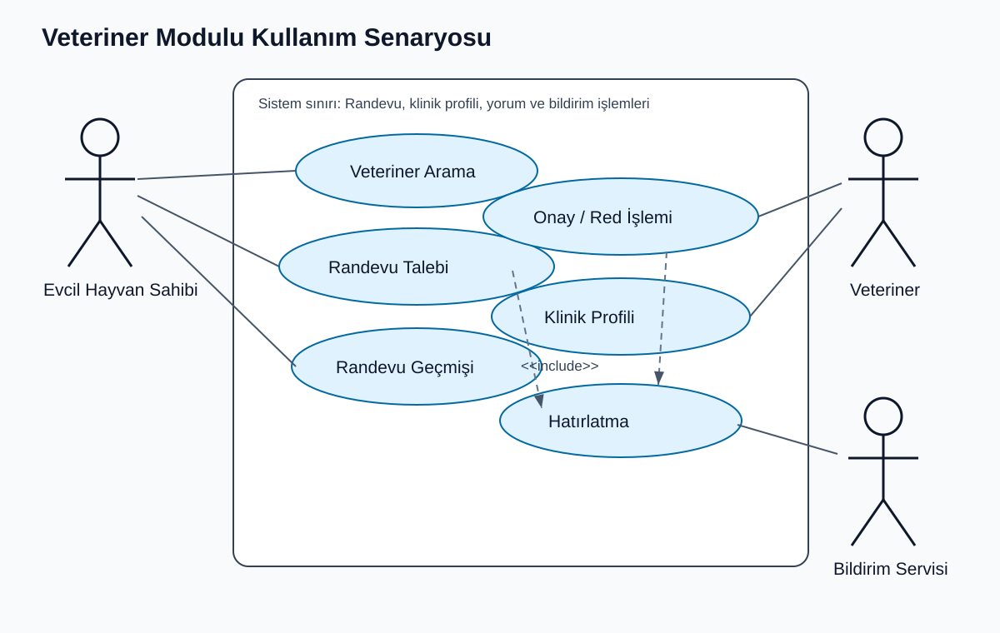
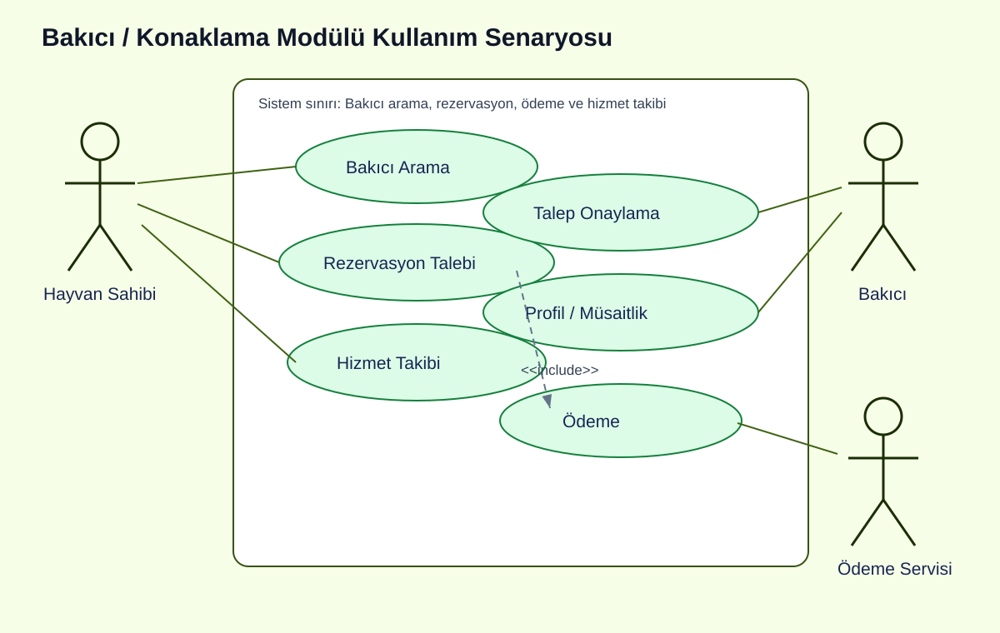
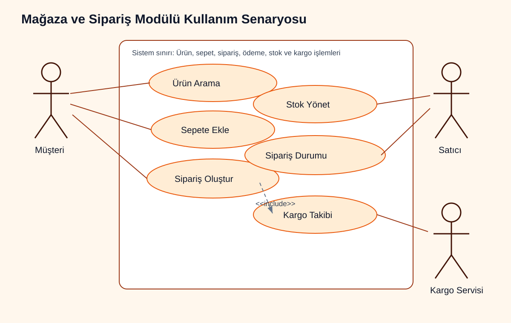
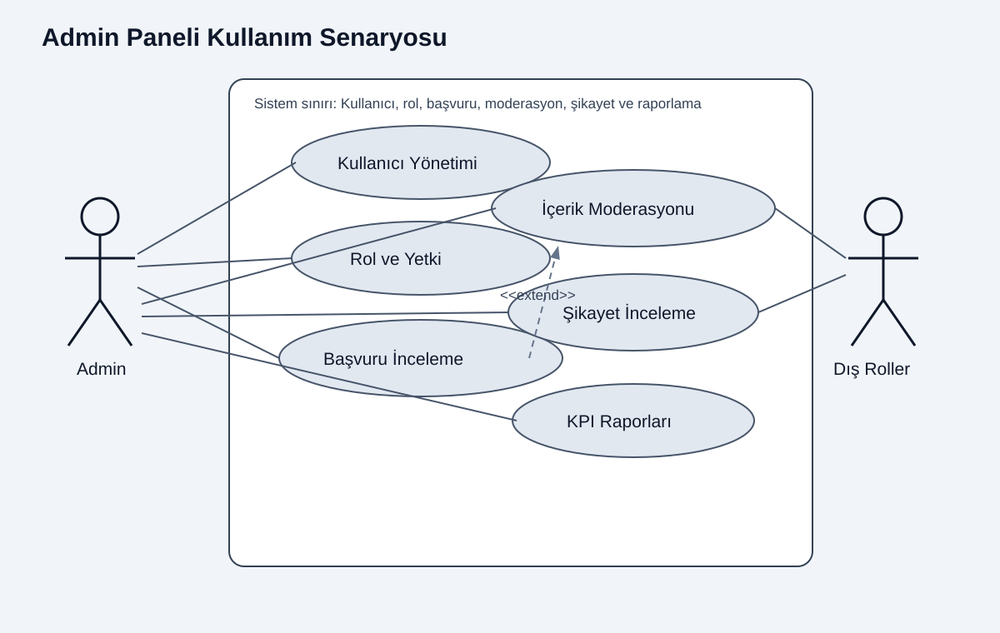
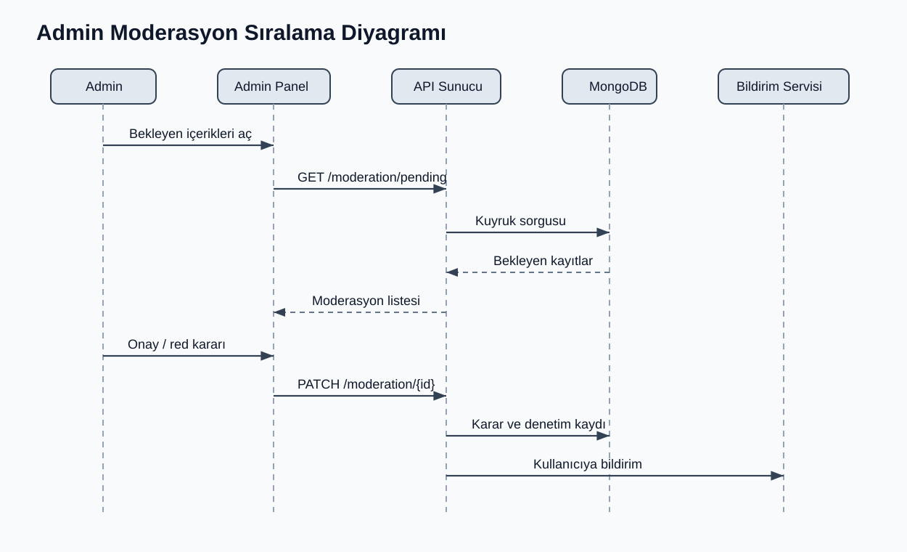
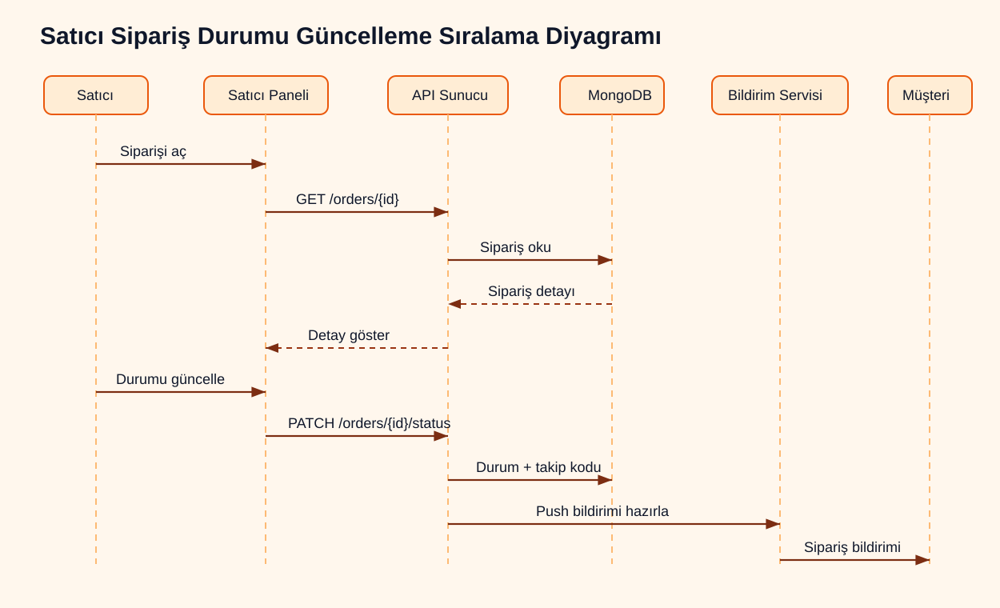
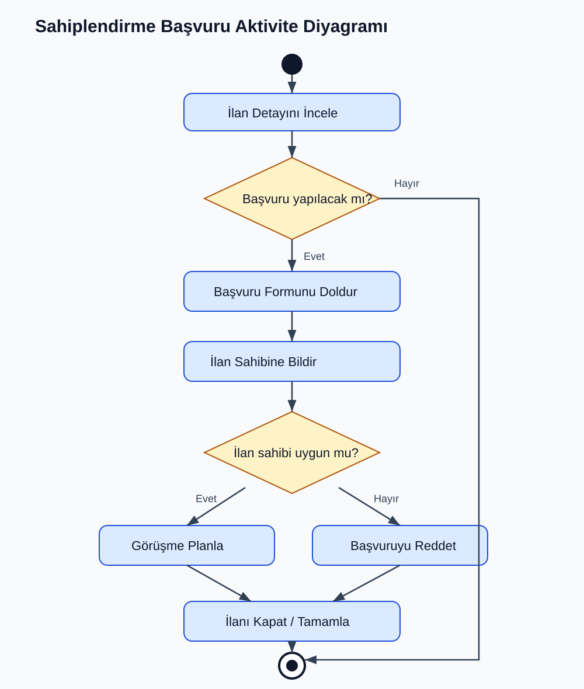
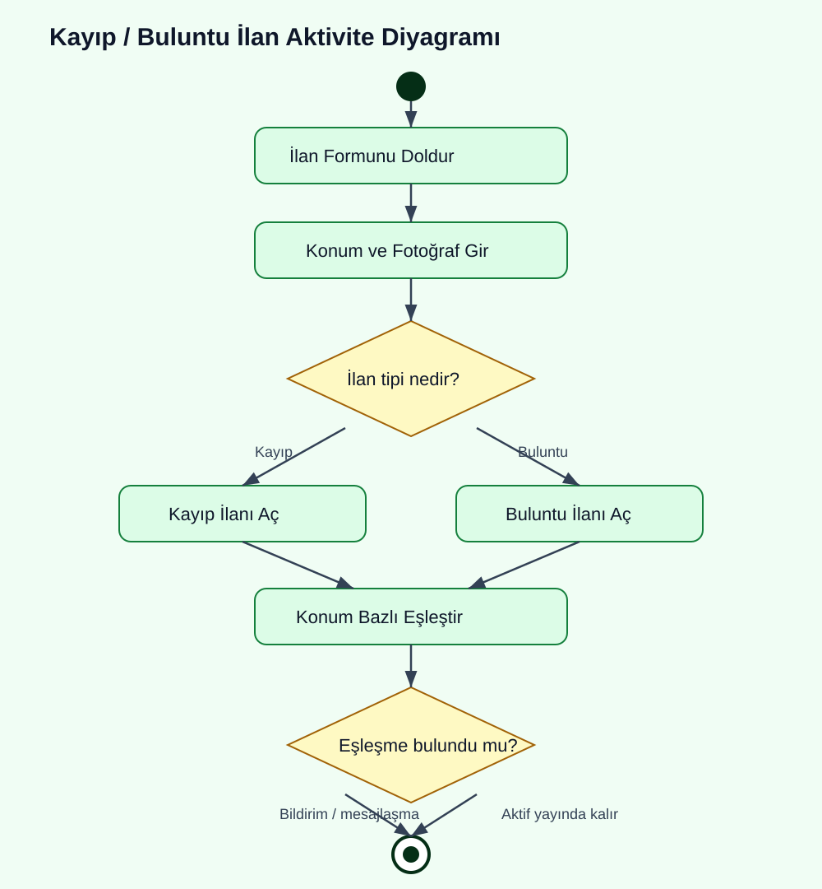
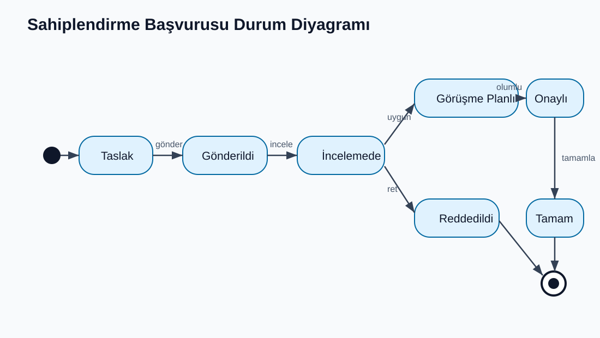
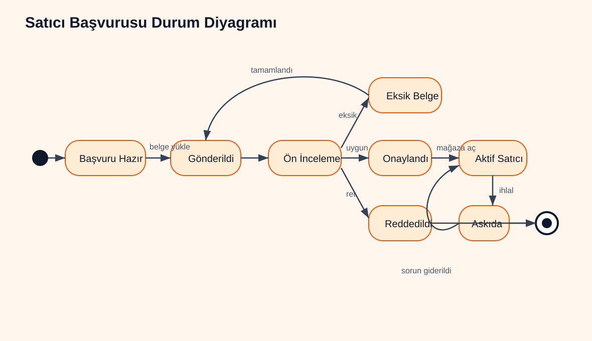

Grafikler

charts/maliyet_dagilimi_pie.svg
charts/rol_bazli_isgucu_pie.svg
charts/faz_sureleri_xy.svg
charts/modul_kapsam_yogunlugu_xy.svg
charts/proje_gantt.svgGenel Sistem Diyagramları

diagrams/context_diagram.svg
diagrams/data_flow_level0.svg
diagrams/component_diagram.svg
diagrams/deployment_diagram.svg
diagrams/class_diagram.svg
diagrams/mongodb_view_diagram.svgKullanım Senaryosu Diyagramları

diagrams/use_case_diagram.svg
diagrams/use_case_veteriner_modulu.svg
diagrams/use_case_bakici_modulu.svg
diagrams/use_case_magaza_modulu.svg
diagrams/use_case_admin_modulu.svgSıralama Diyagramları

diagrams/sequence_vet_appointment.svg
diagrams/sequence_order_flow.svg
diagrams/sequence_realtime_message.svg
diagrams/sequence_admin_moderation.svg
diagrams/sequence_seller_order_status.svgAktivite Diyagramları

diagrams/activity_order_flow.svg
diagrams/activity_sitter_booking.svg
diagrams/activity_adoption_application.svg
diagrams/activity_lost_found_flow.svgDurum Diyagramları

diagrams/state_order.svg
diagrams/state_appointment.svg
diagrams/state_sitter_booking.svg
diagrams/state_adoption_application.svg
diagrams/state_seller_application.svg